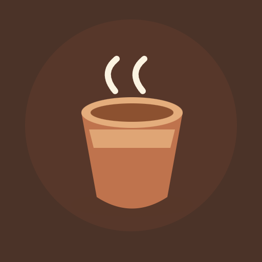

<- all projects

Chai Chapter
Android, PC
Volume
Live
Every cup has a little story.
A tiny counter, a steaming kettle and a new chapter. Reopen your family's chai stall and make it a place where the neighbourhood feels at home again. Read each customer's order, pick the right tea and spices, brew it and serve it before the cup cools. Ingredients run low and refilling takes time, so plan ahead and keep the queue happy. Play 60 shifts, learn 12 recipes and get to know eight regulars, each with a little story. Choose a relaxed shift with no timer or the busy counter, and spend coins on upgrades from a quicker kettle to a shaded awning.